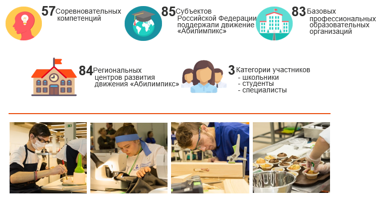

Национальный чемпионат по профессиональному мастерству среди инвалидов и лиц с ограниченными возможностями здоровья "Абилимпикс"
Абилимпикс 2024
ИНФОРМАЦИЯ ДЛЯ ПОБЕДИТЕЛЕЙ
IX РЕГИОНАЛЬНОГО ЧЕМПИОНАТА "АБИЛИМПИКС"
Заявление
Приложения к заявлению Способы получения единовременного денежного вознаграждения Согласие на обработку персональных данных (совершеннолетним) Согласие на обработку персональных данных (несовершеннолетним)
Нормативные документы
Открыта новая компетенция

Об абилимпикс
Абилимпикс - это международное некоммерческое движение целью которого является создание в Российской Федерации системы конкурсов профессионального мастерства для людей с инвалидностью и ограниченными возможностями здоровья «Абилимпикс», обеспечивающей эффективную профессиональную ориентацию и мотивацию людей с инвалидностью к получению профессионального образования, содействие их трудоустройству и социокультурной инклюзии в обществе.
В Международную федерацию «Абилимпикс» входят 56 организаций из 47 стран и регионов.
Национальный чемпионат «Абилимпикс» в Российской Федерации - конкурс профессионального мастерства среди инвалидов и лиц с ОВЗ, проводимый на федеральном уровне.
Нормативно-правовые документы
Федеральные нормативные документы
Региональные документы
«Абилимпикс» включен в государственную программу Российской Федерации «Доступная среда» на 2011-2020 годы в рамках выполнения мероприятий по оказанию государственной поддержки общественным организациям инвалидов и иным некоммерческим организациям.
Задачи, которые призван решить конкурс:
Создание системы профессиональной ориентации и мотивации людей с инвалидностью или ограниченными возможностями здоровья к профессиональному образованию через конкурсы профессионального мастерства
Развитие профессионального мастерства студентов с инвалидностью или ограниченными возможностями здоровья
Содействие трудоустройству выпускников и молодых специалистов с инвалидностью или ограниченными возможностями здоровья
Стимулирование выпускников и молодых специалистов с инвалидностью или ограниченными возможностями здоровья к дальнейшему профессиональному и личностному росту
Выявление и поддержка талантливых детей и молодежи из числа людей с инвалидностью или ограниченными возможностями здоровья
Подготовка волонтеров для работы с людьми с инвалидностью или ограниченными возможностями здоровья
Региональный центр развития движения "Абилимпикс", Региональный центр развития инклюзивного образования "Равные возможности" и ГБПОУ "Нижегородский Губернский колледж" приглашают индивидуальных предпринимателей и юридических лиц различных сфер деятельности к сотрудничеству по организации и проведению IV Регионального чемпионата "Абилимпикс" в Нижегородской области!